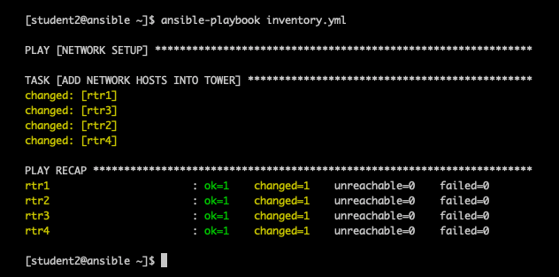

Three quick ways to move your Ansible inventory into Red Hat Ansible Tower
Three quick ways to move your Ansible inventory into Red Hat Ansible Tower
If you've been using Ansible at the command line for a while, you probably have a lot of servers, network devices, and other target nodes listed in your inventory. You know that Red Hat Ansible Tower makes it easier for everyone on your team to run your Ansible Playbooks. So you've thought about using Ansible Tower to take your automation to the next level, but you want to retain all the data and variables in your existing inventory file or directory. Are you worried about transferring your inventory from command-line use to Ansible Tower? Let me show you how easy it is to import your existing Ansible inventory into Ansible Tower!
This blog covers three quick and effective ways to connect your existing Ansible inventory into Ansible Tower:
- Migrating an inventory file from the Ansible Tower control node (awx-manage)
- Migrating an inventory file from anywhere with a playbook
- Setting Tower to access a git source-controlled inventory file
If you're using dynamic inventory, you don't need to import your inventory into Ansible Tower. Dynamic inventory retrieves your inventory from an existing source. With dynamic inventory, you don't need to manage an inventory file at all, you just retrieve the latest and most up-to-date listing every time. Ansible Tower seamlessly integrates with popular dynamic inventory sources including Red Hat OpenStack Platform, Red Hat Satellite, public cloud platforms (Amazon Web Services/AWS, Google Compute Engine/GCE, Microsoft Azure), and virtualization solutions like Red Hat Virtualization and VMware vCenter. You can use scripts to integrate Infoblox DDI and ServiceNow CMDB for dynamic inventory in Ansible Tower as well.
NOTE: This blog does not cover the importing of Ansible Playbooks or Ansible Tower workflows into Ansible Tower and is strictly focused on Ansible inventory portability.
Migrating an inventory file from the Ansible Tower control node (awx-manage)
The command line tool awx-manage, which comes with your Ansible Tower installation, is a simple and effective tool to import your inventory. Using awx-manage makes the most sense when your inventory is a flat file in YAML or ini format that already lives on your Ansible control node. You run the command and point to your existing inventory file then Ansible Tower will be loaded with all the hosts.
-
Using the WebUI login to Ansible Tower and create an empty inventory.

-
Login via SSH to your Ansible Tower control node (This is the Linux machine that has Ansible Tower installed on it).
-
Locate the flat-file that represents your Ansible inventory.
-
Run the awx-manage inventory_import command like this
sudo awx-manage inventory_import --source=/path/to/hosts --inventory-name="My Inventory"
On the terminal window you will receive some output similar to the following:
1.387 INFO Updating inventory 3: My Inventory 1.475 INFO Reading Ansible inventory source: /path/to/hosts 2.119 INFO Processing JSON output... 2.120 INFO Loaded 6 groups, 6 hosts 2.329 INFO Inventory import completed for (My Inventory - 9) in 0.9s
-
Now when you login via the WebUI you will see all the hosts under the inventory

The awx-manage command line tool is very simple and fast. It only took me a couple seconds to take my existing inventory and import it into Ansible Tower.
For teams that use Ansible Tower to run playbooks, but manage inventory outside of Ansible Tower, importing with awx-manage is not the best option, since you would need to re-import the flat-file inventory every time a change is made to your inventory file. If your team will continue to manage inventory outside of Ansible Tower, you probably want to use the GitHub option described below.
Migrating an inventory file from anywhere with a playbook
You can use the Ansible Tower modules to automate the transfer of your inventory into Ansible Tower. These modules make it possible to use Ansible Playbooks to automate and manage everything, including inventory, in your Ansible Tower instance. There is a tower_inventory module that will let us create an inventory, and there is a tower_host module that lets us add a host to an existing inventory. Assume that we already created an inventory called "Network Routers" and I will build an Ansible Playbook to add all my routers in the group routers to that inventory using the tower_host module. The Ansible Playbook will look like this:
- name: NETWORK SETUP hosts: routers connection: local become: yes gather_facts: no tasks: - name: ADD NETWORK HOSTS INTO TOWER tower_host: name: "{{ inventory_hostname }}" inventory: "Network Routers" tower_username: admin tower_password: ansible tower_host: https://localhost variables: ansible_network_os: "{{ansible_network_os}}" ansible_host: "{{ansible_host}}" ansible_user: "{{ansible_user}}" ansible_connection: "{{ansible_connection}}" ansible_become: yes ansible_become_method: enable
The Ansible Playbook will add all devices in the group routers simultaneously. The playbook output will look similar to this:

The advantage of this method is you don't have to be on the control node, you can run the Ansible Playbook from anywhere. Like the awx-manage option, transferring your inventory to Ansible Tower with an Ansible Playbook works well only if you will manage your inventory in Tower in future. These two methods are migration strategies to Tower. Ansible If you use dynamic inventory or source control to manage inventory, you'd have to re-run the playbook for Ansible Tower every time you changed your inventory.
Setting Tower to access a git source-controlled inventory file
The final method I want to cover in this post is using source control to manage my inventory. I have a flat-file inventory file stored in a Github repo. I made an example repo to illustrate this concept here:
https://github.com/ipvsean/sample_inventory
Unlike the previous two methods, this is not meant as a migration strategy, but a more permanent way to manage your Ansible inventory using git and source control. Inventory can be managed in Github and Ansible Tower can simply reflect those changes.
First we need to create an Ansible Tower Project. An Ansible Tower Project is how we can sync Ansible Tower to source code management (SCM) system supported by Ansible Tower, including Git, Subversion, and Mercurial. I will add a Project named Sean's Github, set the SCM Type to Git, and put the SCM URL I listed above.

Now I need to create an Inventory that will use this Ansible Tower project. I will:
- Create an inventory called Sean Github Inventory.
- Add a Source called Sean Github Source, and choose the Ansible Tower Project previously created (named Sean's Github).
- As soon as the Project is selected a drop down menu will appear and allow us to point directly the hosts flat-file.
- Once you create the source you can sync it using the circular arrow sync button. The hosts and groups will automatically show up under the hosts button as shown in the animation below.

Using source control for managing inventory is popular with Ansible Tower users and can scale really well.